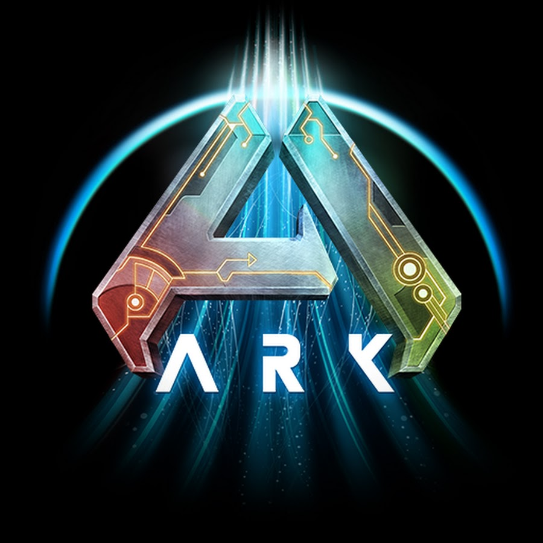

ARK Survival Ascended wiki
the best dinosaur survival game
ARK: Survival Ascended is an action-adventure survival game developed by Studio Wildcard. It is a remake of the original ARK: Survival Evolved, featuring enhanced graphics, improved performance, and new content. Players find themselves stranded on a mysterious island filled with prehistoric creatures, where they must gather resources, build shelters, and tame dinosaurs to survive. The game offers both single-player and multiplayer modes, allowing players to explore the vast open world, engage in combat, and form alliances with other survivors. With its immersive gameplay and stunning visuals, ARK: Survival Ascended provides an exciting and challenging experience for fans of the survival genre.
